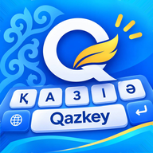

QazKey — Privacy Policy
7.11.2026
Политика конфиденциальности
Дата вступления в силу: 7 ноября 2026 г.
QazKey не собирает, не хранит и не передаёт никакие личные данные.
QazKey — метод ввода (клавиатура) для Android и HarmonyOS. Он позволяет печатать на казахском, русском и английском языках на физической и экранной клавиатуре.
Какие данные обрабатываются
- Нажатые клавиши преобразуются в символы только на вашем устройстве, в момент нажатия. Набранный текст нигде не записывается и не сохраняется.
- На устройстве сохраняется единственная настройка — выбранная раскладка (Қаз / Рус / Eng).
Передача данных
- У приложения нет разрешения на доступ в интернет, поэтому оно не может отправлять какие-либо данные.
- В приложении нет рекламы, аналитики, отслеживания и сторонних SDK.
- Данные не передаются третьим лицам.
Системное предупреждение
При включении любой клавиатуры Android показывает стандартное предупреждение, что она «может собирать весь вводимый текст». Это общее предупреждение для всех методов ввода. QazKey этого не делает.
Дети
Приложение не собирает данные ни у каких пользователей, включая детей.
Изменения
Если политика изменится, новая версия будет опубликована на этой странице с новой датой.
Контакты
Разработчик: Izbassar Salik
E-mail: izbassarsalikov@gmail.com
Құпиялылық саясаты
Күшіне ену күні: 2026 жылғы 7 қараша.
QazKey ешқандай жеке деректерді жинамайды, сақтамайды және жібермейді.
QazKey — Android және HarmonyOS жүйелеріне арналған енгізу әдісі (пернетақта). Ол физикалық және экрандық пернетақтада қазақ, орыс және ағылшын тілдерінде теруге мүмкіндік береді.
Қандай деректер өңделеді
- Басылған пернелер тек сіздің құрылғыңызда, басылған сәтте таңбаларға айналады. Терілген мәтін ешқайда жазылмайды және сақталмайды.
- Құрылғыда жалғыз параметр сақталады — таңдалған орналасу (Қаз / Рус / Eng).
Деректерді жіберу
- Қолданбада интернетке қол жеткізу рұқсаты жоқ, сондықтан ол ешқандай деректі жібере алмайды.
- Қолданбада жарнама, аналитика, бақылау және үшінші тараптың SDK-лары жоқ.
- Деректер үшінші тұлғаларға берілмейді.
Жүйелік ескерту
Кез келген пернетақтаны қосқанда Android оның «терілген барлық мәтінді жинауы мүмкін» екені туралы стандартты ескерту көрсетеді. Бұл барлық енгізу әдістеріне ортақ ескерту. QazKey бұлай жасамайды.
Балалар
Қолданба ешбір пайдаланушыдан, соның ішінде балалардан да деректер жинамайды.
Өзгерістер
Саясат өзгерсе, жаңа нұсқасы осы бетте жаңа күнімен жарияланады.
Байланыс
Әзірлеуші: Izbassar Salik
E-mail: izbassarsalikov@gmail.com
Privacy Policy
Effective date: November 7, 2026.
QazKey does not collect, store or transmit any personal data.
QazKey is an input method (keyboard) for Android and HarmonyOS. It lets you type in Kazakh, Russian and English on hardware and on-screen keyboards.
What data is processed
- Key presses are converted to characters only on your device, at the moment of the key press. The text you type is never recorded or stored.
- The only setting stored on the device is the selected layout (Қаз / Рус / Eng).
Data transfer
- The app has no Internet permission, so it cannot send any data.
- The app contains no ads, analytics, tracking or third-party SDKs.
- No data is shared with third parties.
System warning
When you enable any keyboard, Android shows a standard warning that it "may be able to collect all the text you type". This warning is shown for every input method. QazKey does not do this.
Children
The app does not collect data from any users, including children.
Changes
If this policy changes, the new version will be published on this page with a new date.
Contact
Developer: Izbassar Salik
E-mail: izbassarsalikov@gmail.com